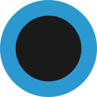
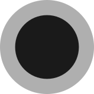
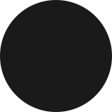
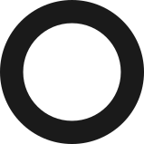
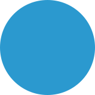
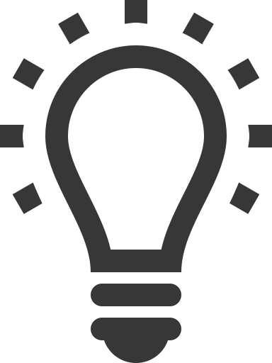

Welcome to The Kanji Map
This site was created to give a visual map of the connections between kanjis and to help Japanese learners study more efficiently.
The kanji decomposition is represented by a graph with detailed kanji and radical information.
If you would like to help improving this site, make sure to support it here.
How to use this site
Graph
Kanjis are represented with nodes and the connection between kanji elements with edges. Click on visible nodes or use the search field to change the selected node. Hover your mouse over the selected node (or click the lightbulb icon in mobile view) to highlight parent nodes with the same onyomi.
: Fit graph to window
Node styles
 : Currently selected kanji
 : Jōyō kanji
 : Not jōyō (jinmeiyō or hyōgai) kanji
 : Unique glyph
 : Kanjis with same onyomi
Info sidebar
Search field : Type a single kanji character to select it
Character & Stroke Order : The kanji character and stroke order animation
Meaning : Meaning of the kanji
Reading
- Kunyomi : Japanese reading of the kanji
- Onnyomi : Chinese (Sino-Japanese) reading of the kanji
- Nanori : Reading used in Japanese names
Kanji information
- Stroke Count : The total stroke-count of the kanji
- Grade : Grade of the kanji
- 教育漢字 (kyōiku kanji) : Kanji taught in elementary school
- 常用漢字 (jōyō kanji) : Kanji taught in junior high school
- 人名用漢字 (jinmeiyō kanji) : Kanji used in Japanese names
- 表外漢字 (hyōgai kanji) : Additional kanji
- Occurrence : Frequency-of-use ranking of the top 2500 kanjis found in newspapers
Radical information
- Radical : Radical and variations
- Stroke Count : The total stroke-count of the radical
- Meaning : Meaning of the radical
- Reading : Janapese reading of the radical
Related words : The most common words containing the kanji with reading and meaning
Mobile view
: Move to the info section
: Move to the graph
 : Highlight same-onyomi nodes
Credits
Cytoscape.js
The Kanji Map was created by using cytoscape.js
cytoscape/cytoscape.js is licensed under the MIT license
KanjiVG
Stroke order animations were created by KanjiVG
KanjiVG is copyright © 2009-2015 Ulrich Apel and released under the Creative Commons Attribution-Share Alike 3.0 license
JMdict and KANJIDIC2
The Kanji Map uses the JMdict and KANJIDIC dictionary files, property of the Electronic Dictionary Research and Development Group
This publication has included material from the JMdict (EDICT, etc.) dictionary files in accordance with the license provisions of the Electronic Dictionaries Research Group. See edrdg.org
CHISE-IDS database
The Kanji Map uses the Ideographic Description Sequence found in the CHISE project
The CHISE-IDS database is published under the GNU General Public License
License
©Copyright The Kanji Map 2017 by Gabor Kovacs - released under the Creative Commons Attribution-Share Alike 3.0 license.

Version
v1.1 - Added undo button and layout animations
v1.2 - Added external links to Kanshūdō, deep linking and replaced missing unicode characters with images
Contact
If you would like to report a bug, request features or just say thanks you can contact me at
thekanjimap@gmail.com